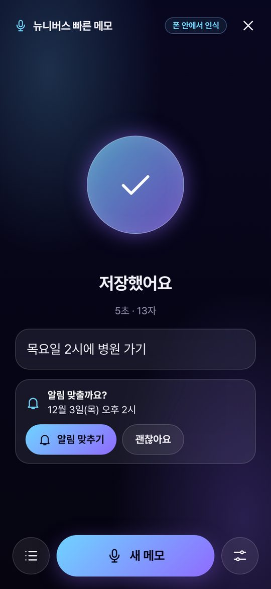
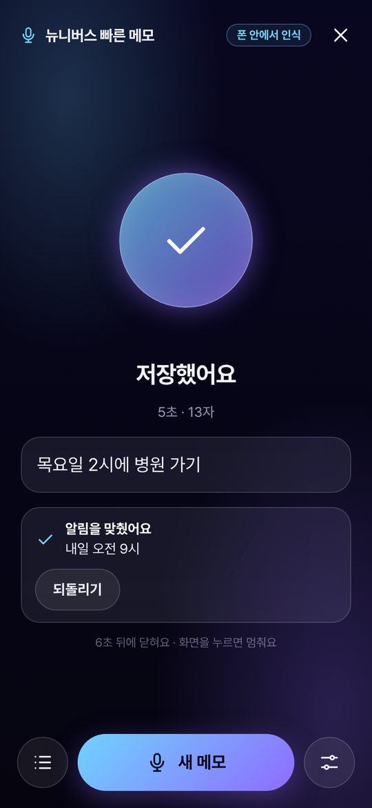
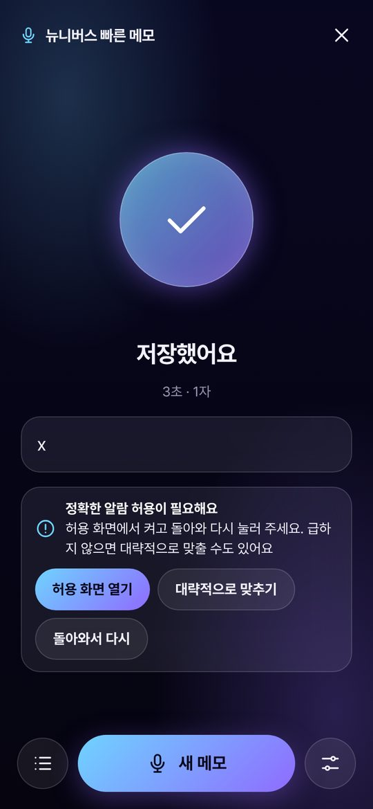
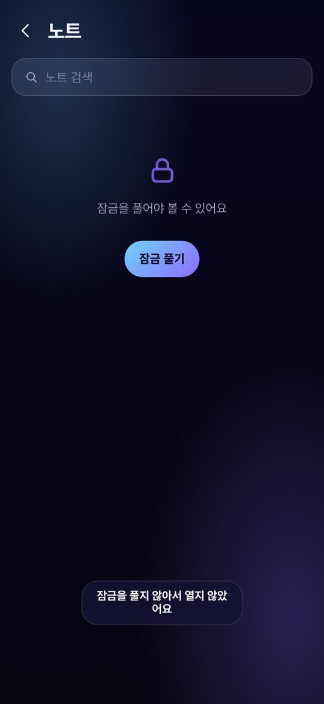

뉴니버스 빠른 메모 v1 (시험판)
버전 1-test · 뉴니버스 고정 서명(런처·전화·문자·설정·계산기와 같은 서명) · 인터넷 권한 없음
내려받기 · 뉴니버스 빠른 메모 v1 (약 0.12MB)
이런 앱이에요
- 깜박하기 전에 말로 바로 남기는 메모예요. 앱이 열리자마자 저절로 듣기 시작해서, 말하는 대로 한국어로 받아 적고 저장해요. 따로 누를 게 없어요.
- 폰 옆면 버튼을 두 번 누르게 설정해 두면, 화면이 꺼져 있어도 · 잠금 화면에서도 바로 메모가 시작돼요. 짧게 진동으로 시작을 알려요.
- 잠깐 쉬어도 계속 들어요. 약 2.5초 조용하거나 화면을 누르면 끝나고 저장돼요. 한 번에 최대 약 60초, 길면 이어서 다음 메모로 저장해요.
- 시간 말이 들어 있으면 ("내일 9시에 알려줘", "30분 뒤", "목요일 2시") 저장 뒤에 「알림 맞출까요?」 단추가 떠요. 직접 누를 때만 알림이 설정돼요. 저절로 설정되는 일은 없어요.
- 예전 메모 목록은 폰 잠금을 풀어야 볼 수 있어요(잠금 화면에서는 방금 한 메모만 보여요). 검색 · 복사 · 공유 · 삭제가 돼요.
- 받아쓰기를 쓸 수 없거나 인터넷이 없으면 소리만 저장해 두고 나중에 글로 옮길 수 있게 해요. 나중에 다시 듣고 직접 글을 적을 수 있어요(자동 변환은 아직 없어요).
- 말한 소리를 m4a 파일로 같이 보관하는 기능은 기본으로 꺼져 있어요(설정에서 켤 수 있어요).
1. 설치하기
- 이 폰의 크롬에서 위 내려받기 → 내 파일 › 다운로드 › newniverse-memo-v1-test.apk → (출처 허용) → 설치.
- 나중에 새 버전이 나오면 지우지 않고 위에 그대로 덮어 깔면 돼요. 메모는 그대로 남아요.
2. 처음 한 번은 화면을 켜고 열어서 허용하기
중요: 첫 실행은 잠금을 푼 상태에서 앱 목록의 뉴니버스 빠른 메모 아이콘으로 열어 주세요. 허용 창이 잠금 화면 위에서는 뜨지 않을 수 있어요.
- 마이크 허용 — 「앱 사용 중에만 허용」을 고르세요.
- Google 음성 인식 안내가 뜨면 동의하세요. (폰의 받아쓰기 서비스가 한 번 묻는 창이에요. 한국어 음성 파일을 내려받으라고 하면 와이파이에서 받아 두면 인터넷 없이도 돼요.)
- 알림 허용(안드로이드 13 이상) — 알림 맞추기를 처음 누를 때 물어요.
- 알람 및 리마인더 허용(정확한 알람) — 알림 맞추기에서 안내가 떠요. 안 켜도 쓸 수 있지만, 알림이 몇 분 어긋날 수 있어요. 설정 화면의 권한 칸에서도 확인해요.
3. 옆면 버튼 두 번 → 뉴니버스 빠른 메모 열기
아래 메뉴 이름은 대략적인 안내예요. 삼성 갤럭시는 기종과 One UI 버전(8 포함)마다 이름과 위치가 조금 달라요. 같은 뜻의 항목을 찾아 주세요.
- 설정 앱을 열어요.
- 유용한 기능(영어 화면: Advanced features)을 눌러요.
- 측면 버튼(Side button)을 눌러요.
- 두 번 누르기(Double press)를 켜요.
- 그 아래 앱 열기(Open app)를 고르고, 옆의 톱니바퀴를 눌러요.
- 앱 목록에서 뉴니버스 빠른 메모를 골라요.
못 찾겠다면: 화면 맨 위를 아래로 두 번 쓸어 내려 빠른 설정을 펼치고, 오른쪽 위 전원 단추 → 측면 버튼 설정으로도 들어갈 수 있어요. 설정 앱 위쪽 검색창에 「측면 버튼」이라고 쳐도 돼요.
참고로 삼성 안내문에는 「설정 › 유용한 기능 › 측면 버튼 › 두 번 누르기」까지 나오고, 앱을 고르는 마지막 칸 이름은 「앱 열기」 또는 「앱」으로 보여요.
잠금 화면에서 옆면 버튼을 두 번 눌렀을 때 삼성이 먼저 잠금 해제를 요구하는지는 폰마다 달라서, 이 안내서에서는 확인하지 못했어요. 아래 시험 4번에서 직접 확인해 주세요.
4. 시험해 보기 (순서대로)
- 켜진 화면에서: 앱 아이콘을 열고 「메모 시험입니다」라고 말해 보세요. 진동 → 글자가 올라오고 → 조용해지면 저장돼요.
- 옆면 버튼 두 번(화면이 켜진 채로): 앱이 바로 열려 듣기 시작하나요?
- 화면을 끄고 옆면 버튼 두 번: 화면이 켜지고 바로 듣기 시작하나요? 말해 보세요.
- 잠금 화면에서 옆면 버튼 두 번: 잠금을 풀지 않고도 메모가 되는지, 아니면 삼성이 잠금 해제를 먼저 묻는지 알려 주세요.
- 「내일 아침 9시에 알려줘」라고 말해 보세요. 저장 뒤 「알림 맞출까요?」가 뜨면 눌러서 알림이 오는지 봐요. 「30분 뒤에 알려줘」도 해 보세요.
- 비행기 모드로 하고 말해 보세요. 글로 받아 적히거나, 「소리로 저장했어요」(나중에 글로 옮기기)가 떠야 해요.
- 잠금 화면에서 목록(메모 모음)을 누르면 잠금 해제를 먼저 묻고, 풀기 전에는 예전 메모가 안 보여야 해요.
시험판이에요. 안 되는 것은 폰 기종 · One UI 버전 · 어느 단계에서 어떻게 됐는지(화면 사진이면 더 좋아요)를 알려 주세요.
화면




화면은 시험 환경에서 만든 예시예요.